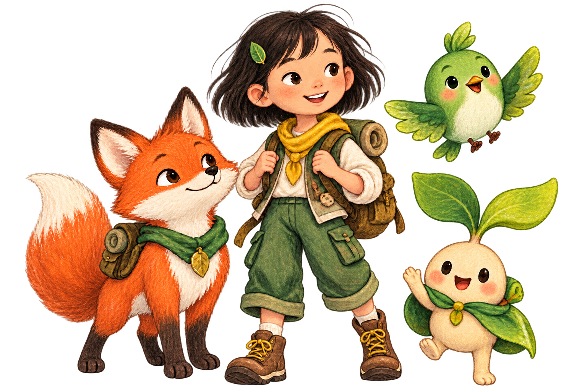

Good day, Zianna
今天的英语
探险准备好了吗？
跟 Sprig、Pip 和 Momo 一起寻找故事树的十二片光。每天一小步，每周完成一个能留下来的作品。

RIGHT FOR YOU
今天从这里开始
每次约 10–12 分钟
12-WEEK ROADMAP
Zianna 的成长地图
三段能力、十二个主题、六十节课程，达到掌握标准后逐步前进。
SAFE CONVERSATION LAB
角色对话馆
围绕本周词汇完成三轮对话。回答后，伙伴会继续追问并指出遗漏的关键表达。
免账号 · 学习结果留在本机
TODAY’S COACH
也可以先大声说，再输入或选择最接近的回答。
PARENT WEEKLY VIEW
本周学习报告
看见孩子会了什么、哪里需要复习，以及她留下的声音作品。
五项能力
本周我能做到
Zianna 的声音作品
NEXT BEST ACTION
本周个性化建议
ZIanna's reading nook
分级阅读馆
24 本短读物，随课程成长。可以听、点词朗读、答题，也可以录下自己的有声书。